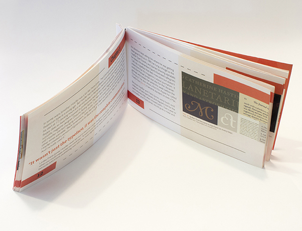
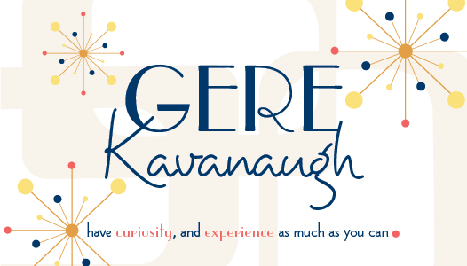

"WORK HARD" - ALL POSTERS
This poster was created for a Creative Allies contest. The contest parameters were to create a “Back to School” inspired design for All Posters. This design uses the words “Work Hard” because you physically have to work hard to find the phrase within the school supplies, and you have to work hard in school. The color scheme was inspired by the colors of each of the different school supplies.

"TOMORROW WILL BE BRIGHTER" - ALL POSTER
This poster was created for a Creative Allies contest. The contest parameters were to create a “Back to School” inspired design for All Posters. This design uses the words “Work Hard” because you physically have to work hard to find the phrase within the school supplies, and you have to work hard in school. The color scheme was inspired by the colors of each of the different school supplies.

BENZIE AREA HISTORICAL SOCIETY POSTER & RACK CARDS
Benzie Area Historical Museum had a main exhibit called "Summer Fun in the Benzie Sun" in Summer 2018, and it consisted of a recreational summer sports exhibit, a W.H. Sharp photography exhibit, and a vintage array of Benzie County area school photos. These design pieces were used to promote this "Summer Fun in the Benzie Sun" event. Their main goal with this event was to attract both locals that have enjoyed the Museum for many years, and tourist with their families visiting the area over the summer. Simple wave lines and graphics allow the piece to breath, but still add a fun flare. The final piece is graphic, as it uses single color icons to illustrate the events, and fun colorized vintage images from the Benzie Area Historical Museum archives. The colors chosen were a process CMYK Blue, Red, and Yellow, all middle tone based, these colors embody the fun and summer excitement.

"QUE SERA" PRODUCT DESIGN
This packaging design serves the purpose of selling the product in store displays. It also holds other jewelry pieces in an envelope style packaging. This dual purpose design (with locking tabs and an earring holding insert) allows the consumer to transport additional jewelry for changing looks on a night out, or a vacation. The “Que Sera” brand name comes from a saying that means “whatever will be”, because with the dual purpose of carrying extra jewelry, the consumer will be ready for everything and anything. The barcode is a women’s side profile (showing the earring) to create a fun element for the consumer. The design was created by hand painting abstract flower made of lines to create the fun flirtatious pattern.
TEA BRAND IDENTITY AND MAILER DESIGN
The goal with this project was to create an identity system and a promotional mailer for the Tea clothing company. This design includes references to Tea's global acquaintances and clothing materials. The yarn ball and leaves, apparent in the logo, represent many of Tea's company values. The yarn sphere, symbolizes Tea’s desire for unity and relationships with nations across the world. The arched lines, symbolize not only a ball of yarn, but materials and textiles, which relate back to the product of clothing. The leaf symbols are a representation of not only the growth of children, but also the unending inspiration for their clothing line from the natural world. The earthy toned colors used in this identity system embody the natural elements like sky and earth, which influence the Tea clothing line. The logos typeface is called Menjelajah Halmahera. It is India inspired to reflect the cultural influence on the company. The use of the yarn ball relates to materials, the sphere shape relates to international affairs, and the leaves show the natural influence Tea utilizes.

NMC ART SHOW POSTER
For this NMC Student Art Show poster design, the idea was to create a new and innovative poster campaigning for student submissions. The NMC art show is an opportunity for student to submit works of art. Students works are showcased and awarded cash prizes, if applicable. This poster includes a heavy use of rectangles, both vertical and horizontal, to create an overall shape, flow, and eye catching aesthetic. The font choices used in this poster were a Berlin Email and a Mixolydian Titling. This poster was the contest winner and was displayed all over campus to inform students that submissions were needed.
FOUNTAIN POINT MUSIC FESTIVAL
This piece was the annual poster for the Fountain Point Music Festival for the Summer of 2018. Fountain Point Music holds a summer concert series every summer for soulful, folk, and Indy music enthusiast. The posters goal is to share the summer concerts line up and where individuals can get tickets. My inspiration for this poster was the splashes from water fountains. Instruments and music notes were hand painted to create fun shapes amongst the splash brush strokes. The colors chosen are a cream and vibrant shades of orange and red as they embody Folk and Indy tones. The fonts used are a Raskey and Selima

ROSIE'S MENU
Rosie’s Country Cafe is a small country establishment that specializes in delicious homemade foods and offers a welcoming, rustic environment for its visitors. The goal of this menu is to show the aesthetic of the restaurant and really give off a homemade food vibe. The menu accomplishes this by using earthy tones, worn textures, lightly texture Jute Vellum Paper and fonts that fit the rustic charm and ambiance of Rosie’s. A new identity was created for Rosie’s. A logo featuring a rooster emerging from the steam of a coffee cup was the main symbolism. The worn texture invites the viewer into the menu and conveys the restaurants overall feel.


PHOTOGRAPHY
These two photos are two of my favorites taken in my photography class. The top photo is of the Manistee Ghost Ship. This is one of my favorite photos because of its exploration of tiny details within the massive ship. The bottom photo is of a generic neon business sign taken at dusk. This is one of my favorites because of its color play, and its ability to draw the viewer into its lit path in an abstract way.

NMC PORTFOLIO NIGHT POSTCARD
This invite design was for Northwestern Michigan College’s Portfolio Night. The design was inspired by Memphis design and color blocking. The invite uses fun color play. The technology inspired typeface paired with the simple san-serif typeface creates balance. The concept includes eyes and communication bubbles to represent our degree’s name "Visual Communications". This design was chosen as the winner. It was sent out to design professionals in the area inviting them to join us for the portfolio review of my graduating class.
VINYL THEATER NEON POSTER
This design was created for a design contest for Creative Allies. This design was created for Vinyl Theatre, an alternative punk band that wanted a promotional t-shirt to sell to its fans. My concept for this contest was to use each song title off their Origami album to create neon sign inspired illustrations. I also used the "VT" logo with some color alterations.

VINYL THEATER HIBISCUS POSTER
This design was created for a design contest for Creative Allies. This design was created for Vinyl Theatre, an alternative punk band that wanted a promotional t-shirt to sell to its fans. I was inspired by their song "The Island". I decided to paint acrylic hibiscus flowers to represent Vinyl Theatre's engaging lyrics. I also used the "VT" logo with some color alterations.
MY BRAND IDENTITY
This is my personal identity system. It embodies myself in many ways. The recurring stripe pattern and hexagonal shape references a bee. Their perseverance and actions to always make the world more beautiful, inspires me. The bee also references my last name "be"miss. The flourishes in my logo represent my personality. I am an individual who values going the extra mile and finessing things in order for a piece to be pleasing to the eye. The layering of the K and B represent the layers of myself. As I grow as an artist’s, I find myself peeling off layer after layer of self-doubt and becoming more confident in my abilities. The typeface chosen is called Poppins, which is a nod to my love of poppy flowers and san-serif typeface.
NMC S.O.A.R PROGRAM BROCHURE
This Project was for the NMC S.O.A.R Program, a program for learners limited by cognitive disabilities looking to extend their education to gain career and life skills. Students with cognitive disabilities have limited experience in their education which stem from “formalized structured” programs offered in K-12 plus programs around the region. Our final piece is highly graphic, it uses simple, single color icons to illustrate some of the course offerings, in a less wordy way. This accordion brochure is intended to act as an evergreen that informs individuals of where to access the NMC S.O.A.R application and general course information. The format is laid out in a way that allows the reader to assess each page left to right, easily. The colors chosen were a PMS 341C, which is the NMC Green, and PMS 108 C Yellow with tints of each. The typefaces used are Verdana and Century Gothic, for easy readability.

"A TYPE HOUSE DIVIDED" BOOKLET
This type book design was created to show consistency and type organization. The idea behind this piece was to use a provided short story, “A Type House Divided” by Jason Fagone, about the type foundry feud of Jonathan Hoefler and Tobias Frere-Jones. Photos and pull quotes from the text were used to create visual interest. The colors used were black and orange, because they embody caution and creativity which illustrates Hoefler and Frere-Jones relationship. The typefaces used were Roboto and Gill Sans. The overall goal was to illustrate and tell the relationship of Hoefler and Frere-Jones in a graphic and compelling way to maintain a reader's attention.

CALLING CARDS
These calling cards were designed for famous book characters and AIGA medalist. The idea behind each card was be influenced by their characteristics and careers. Alice’s card embodies her innocent and sophisticated personality, it uses script and whimsical serif typefaces. Katniss Everdeen's, from The Hunger Games, card plays with her archery skills and “girl on fire” title. Katniss is an empowering woman. These organic and structured fonts both show her strength and femininity. Gere Kavanagh is an AIGA medalist who designs primarily in 60’s style. Her card incorporates her 60’s influence, and the freely feminine feel that Gere encompasses. Mark Randall is also a AIGA medalist. He primarily designs for social and environmental causes. He acknowledges that designers should be like bees, and work for the collective good. His card is intended to show this concept and include strong san-serif typefaces.

THE BOOK OF OPPOSITES
The concept behind this piece was to create a book displaying the opposites of typography such, as masculine and feminine, or tall and short. This book uses popular novels and examples of opposite fonts to show how a font can affect the overall appearance of a novels design. Ultimately, the goal of this design is to influence its audience to understand that type choice matters, and to show the opposite pairs of type in the universe. The overall book design was also influenced by an old, vintage novel jacket with the use of classical scroll, and red and gold gradients.